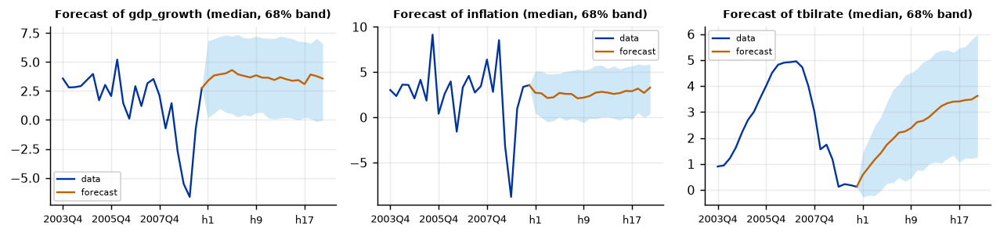

Run this model on your own data in Open Econometric Systems →
Step 1The question and the model
Where will growth, inflation and the interest rate be in five years, given what we know about their long-run levels? In an ordinary VAR the long-run mean of the variables is a nonlinear function of all the coefficients, \(\mu = (I - A_1 - \dots - A_p)^{-1} c\), so a prior on the constant says nothing sensible about it. Forecasts converge to a mean the researcher never chose. The mean-adjusted VAR of Villani (2009) moves the constant out of the way:
Here \(\psi\) is the steady state, the unconditional mean of \(y_t\), and it gets its own prior: \(\psi \sim N(\psi_0, \Omega)\). Forecasts converge to \(\psi\), so the prior disciplines the long horizon directly. The lag coefficients get a Minnesota prior with mean zero (the variables are deviations from the steady state, so they are stationary by construction). Estimation is by Gibbs sampling.
Where does \(\psi_0\) come from? From outside the sample: an inflation target, a long-run growth estimate from a growth model, an interest rate equal to the target plus the neutral real rate. State this in the paper; it is the main modelling choice.
What the model assumes
The VAR is stationary around \(\psi\): the steady state exists only if the variables do not have a unit root. Growth rates and inflation are fine. Interest rates and unemployment are borderline in postwar U.S. data, as the unit-root table in Step 2 shows. If a series is better described by a random walk, use the ordinary BVAR with a random-walk prior instead, or transform it (differences, deviations from a trend).
How to write it: the model
We estimate a mean-adjusted Bayesian VAR (Villani 2009) in GDP growth, inflation and the three-month Treasury bill rate, \(y_t - \psi = \sum_{l=1}^{p} A_l (y_{t-l} - \psi) + \varepsilon_t\). The prior on the steady state \(\psi\) is normal with means of 3% (growth), 3.5% (inflation) and 5% (interest rate) and standard deviations of 0.5, 1 and 1 percentage point. The lag coefficients have a Minnesota prior with mean zero and overall tightness \(\lambda_1 = 0.1\). The posterior is simulated by Gibbs sampling with 1,000 draws after a burn-in of 500.
Step 2Load the data and test for unit roots
import numpy as np
import pandas as pd
import oes_engine as oes # pip install -e open-econometric-systems/oes-engine
data = open("us_macro.csv").read()
df = pd.read_csv("us_macro.csv")
vars_ = ["gdp_growth", "inflation", "tbilrate"]
print(df[vars_].describe().round(2).loc[["mean", "std", "min", "max"]])
spec = dict(vars=vars_, time="date", lags=2, ss_mean="3, 3.5, 5", ss_sd="0.5, 1, 1", draws=1000, burn=500)
r = oes.run("mabvar", data, spec)
oes.show(r, "Unit-root") gdp_growth inflation tbilrate
mean 3.10 3.98 5.32
std 3.52 3.25 2.80
min -8.28 -8.79 0.12
max 15.43 14.62 15.33
Unit-root tests
ADF level, constant: p ADF level, trend: p ADF first difference: p KPSS level: p Conclusion
Variable
gdp_growth 0.0000 0.0000 0.0 0.1000 I(0)
inflation 0.0271 0.0822 0.0 0.0808 I(0)
tbilrate 0.2805 0.4462 0.0 0.0538 I(1)
Note: ADF H0: unit root; KPSS H0: stationary (p-values are truncated at 0.01 and 0.10). For a Minnesota-type prior use a prior mean of 1 on the own first lag for I(1) variables in levels (random walk) and 0 for stationary variables. A VAR in levels with a random-walk prior remains valid when the variables are I(1) or cointegrated (Sims, Stock and Watson 1990).How to read it
Growth rejects a unit root clearly (p < 0.001) and inflation at 5% (p = 0.03). The T-bill rate does not reject (p = 0.28, KPSS p = 0.05): over 1959 to 2009 it has a long upward and downward swing, so a stationary model around a fixed mean is an approximation. The largest root of the system will be close to one (Step 7). This is the usual compromise for a steady-state VAR; the prior on \(\psi\) is what keeps the long-run forecast anchored, and Step 8 shows how much the answer depends on it.
Step 3Choose the prior for the steady state
The prior mean and standard deviation of \(\psi\) are the model's judgement. The sample means (3.1, 4.0, 5.3) are one data-based guide but a poor prior, since the data would then be used twice. A better guide:
| Variable | Prior mean | Prior s.d. | Reason |
|---|---|---|---|
| GDP growth | 3 | 0.5 | Trend growth of about 3% a year |
| Inflation | 3.5 | 1 | Between the 1960s low and the 1970s peak, wide enough to leave room for the data |
| T-bill rate | 5 | 1 | A real rate of about 1.5% plus inflation of 3.5% |
A tight prior (small standard deviation) fixes the steady state at your belief and makes the forecast an implication of it; a loose prior lets the data choose and approximately reproduces the sample mean. Step 8 compares them.
Step 4Estimate
oes.summary(r)
oes.show(r, "Steady states")
oes.show(r, "MCMC convergence diagnostics (steady")Observations: 200
Lags: 2
Steady state of gdp_growth: 3.1088
Steady state of inflation: 3.8274
Steady state of tbilrate: 5.0109
Steady states (posterior)
Mean Std. dev. 2.5% Median 97.5% P(> 0)
Parameter
gdp_growth 3.1088 0.2720 2.5799 3.1114 3.6565 1.0
inflation 3.8274 0.4394 2.9774 3.8313 4.6842 1.0
tbilrate 5.0109 0.6124 3.7194 5.0283 6.1495 1.0
Note: Prior: gdp_growth ~ N(3, 0.5^2); inflation ~ N(3.5, 1^2); tbilrate ~ N(5, 1^2)
MCMC convergence diagnostics (steady states)
Effective sample size Efficiency (ESS / draws) Geweke z p-value
Parameter
steady state: gdp_growth 1000.0 1.0 -1.517 0.1292
steady state: inflation 1000.0 1.0 0.028 0.9779
steady state: tbilrate 1000.0 1.0 -0.594 0.5525
Note: Geweke compares the first 10% with the last 50% of the chain: |z| > 1.96 suggests the chain has not settled; run more draws or a longer burn-in. ESS above about 200 gives reliable posterior means and bands. Lowest efficiency: 1.0.How to read it
Each row shows the posterior of one steady state. Growth: 3.11% a year (95% interval 2.58 to 3.66); inflation: 3.83% (2.98 to 4.68); T-bill rate: 5.01% (3.72 to 6.15). Compare with the prior in the note: the posterior standard deviations (0.27, 0.44, 0.61) are about half the prior ones (0.5, 1, 1), so the data are informative about the long-run means, and they move the inflation mean from the prior 3.5 up to 3.83. Where the posterior is close to the prior and the standard deviation has not fallen, the data have said nothing and the prior is your result; say so.
Convergence: the effective sample size equals the number of draws (1000) and Geweke's |z| is below 2 for all three steady states, so the chain has settled and the posterior means are reliable.
Step 5Equations and variance decomposition
oes.show(r, "Equation: tbilrate")
oes.show(r, "Forecast-error variance")Equation: tbilrate
Mean Std. dev. 2.5% Median 97.5% P(> 0)
Parameter
const 0.3045 0.1301 0.0654 0.3017 0.5787 0.995
L1.gdp_growth 0.0124 0.0104 -0.0083 0.0125 0.0325 0.894
L1.inflation 0.0169 0.0150 -0.0129 0.0175 0.0452 0.866
L1.tbilrate 0.7692 0.0408 0.6883 0.7708 0.8448 1.000
L2.gdp_growth 0.0056 0.0060 -0.0060 0.0057 0.0178 0.813
L2.inflation 0.0078 0.0088 -0.0096 0.0081 0.0253 0.817
L2.tbilrate 0.1403 0.0376 0.0710 0.1407 0.2125 1.000
Forecast-error variance decomposition (posterior median, %)
Horizon shock: gdp_growth shock: inflation shock: tbilrate
Variable
gdp_growth 1 100.0 0.0 0.0
gdp_growth 4 98.9 0.7 0.3
gdp_growth 8 98.1 1.1 0.7
gdp_growth 12 97.7 1.2 1.0
gdp_growth 20 97.4 1.3 1.2
inflation 1 1.1 98.9 0.0
inflation 4 1.5 96.9 1.5
inflation 8 1.8 94.2 3.6
inflation 12 2.0 92.7 4.9
inflation 20 2.3 91.3 5.9
tbilrate 1 8.9 14.4 76.3
tbilrate 4 11.6 17.7 70.2
tbilrate 8 12.4 19.1 67.9
tbilrate 12 12.6 19.6 67.1
tbilrate 20 12.8 19.9 66.7
Note: Share of each variable's h-step forecast-error variance due to each Cholesky shock.How to read it
The interest-rate equation is a policy rule in deviations from the steady state: the rate is persistent (own lags 0.77 and 0.14, sum 0.91) and responds positively but weakly to growth and inflation (posterior probabilities of a positive sign 0.81 to 0.89; none of the intervals excludes zero). There is no constant to interpret: the constant of the ordinary VAR is replaced by \(\psi\) and the lag coefficients.
The variance decomposition rows show the Cholesky shocks (growth, inflation, T-bill rate). The interest-rate shock explains only 1% of the forecast-error variance of GDP growth and 6% of inflation after five years: policy surprises are a small source of fluctuations, as in the BVAR guide.
Step 6Forecasts: what the steady state does
oes.plot(r, "Forecast of")
oes.show(r, "Out-of-sample")Out-of-sample forecast RMSE (recursive, last 20% of the sample, 38 forecasts)
Horizon RMSE gdp_growth RMSE inflation RMSE tbilrate
Model
BVAR 1 2.9293 3.0069 0.7048
BVAR 4 3.5116 3.1452 2.0655
OLS VAR 1 2.8233 3.2524 0.5964
OLS VAR 4 3.5315 3.3830 1.8563
Random walk 1 2.9150 3.5139 0.5583
Random walk 4 3.2805 4.1690 1.7917
Note: The BVAR uses the Normal-Wishart posterior mean with the same lambda1; lower RMSE is better. Columns follow the variable order.
How to read it
The charts show the median forecast and a 68% band 20 quarters ahead from 2009Q3, when the T-bill rate was close to zero. The forecast of the T-bill rate rises from 0.6% to 3.6% after five years: it is converging towards the steady state of 5.0%, and the speed is set by the persistence of the system (Step 7). Inflation and growth, already close to their steady states, hardly move on the long horizon. This is the purpose of the model: the long-run forecast is an explicit function of the prior and the data.
The out-of-sample table is for the ordinary Normal-Wishart BVAR with the same tightness, not for the steady-state model, and it is a useful benchmark in a paper rather than a test of the steady-state prior. For inflation the BVAR has the lowest error at both horizons (3.01 and 3.15, against 3.25 and 3.38 for the OLS VAR and 3.51 and 4.17 for a random walk). For the interest rate a random walk is best, and for GDP growth the OLS VAR is best at one quarter and a random walk at four. In a forecasting paper, evaluate the steady-state model itself against these benchmarks, with Diebold-Mariano tests.
Step 7Diagnostics
oes.show(r, "Residual diagnostics")
oes.show(r, "Stability")
oes.show(r, "MCMC convergence diagnostics (coeff", rows=6)Residual diagnostics (at the posterior mean)
Statistic p-value Detail
Test
Portmanteau (Hosking), 12 lags 219.7585 0.0000 df = 108; H0: no residual autocorrelation (approximate after estimating lags)
Ljung-Box, gdp_growth 14.2531 0.2848 H0: no autocorrelation
Jarque-Bera, gdp_growth 17.0965 0.0002 H0: normal residuals
ARCH LM, gdp_growth 7.2157 0.1249 H0: no conditional heteroskedasticity
Ljung-Box, inflation 48.7477 0.0000 H0: no autocorrelation
Jarque-Bera, inflation 71.7802 0.0000 H0: normal residuals
ARCH LM, inflation 23.0384 0.0001 H0: no conditional heteroskedasticity
Ljung-Box, tbilrate 44.1931 0.0000 H0: no autocorrelation
Jarque-Bera, tbilrate 1133.4775 0.0000 H0: normal residuals
ARCH LM, tbilrate 65.3232 0.0000 H0: no conditional heteroskedasticity
Stability
Value
Item
Share of posterior draws with all companion roots inside the unit circle 1.000
Largest root modulus at the posterior mean 0.928
Note: Unit roots in levels data make many draws non-stationary; that is expected with a random-walk prior and is not a failure.
MCMC convergence diagnostics (coefficients)
Effective sample size Efficiency (ESS / draws) Geweke z p-value
Parameter
gdp_growth: const 1000.0 1.000 -2.371 0.0177
inflation: const 796.0 0.796 -0.770 0.4412
tbilrate: const 843.0 0.843 -0.747 0.4551
gdp_growth: L1.gdp_growth 1000.0 1.000 1.182 0.2370
tbilrate: L1.gdp_growth 1000.0 1.000 -0.796 0.4261
inflation: L1.inflation 878.0 0.878 -0.217 0.8285
Note: Geweke compares the first 10% with the last 50% of the chain: |z| > 1.96 suggests the chain has not settled; run more draws or a longer burn-in. ESS above about 200 gives reliable posterior means and bands. Lowest efficiency: 0.796.How to read it
Residuals are not white noise: Ljung-Box rejects for inflation and the interest rate (p < 0.001) but not for GDP growth (p = 0.28); normality is rejected for all three, extremely for the interest rate (Jarque-Bera 1133, from the 1979 to 1982 period), and ARCH is present in inflation and the interest rate. These are the usual features of postwar U.S. data; the SV-VAR guide models the changing volatility. Note them as limitations and check that the main results do not change with four lags (Step 8).
Stability: every posterior draw is stationary, and the largest root at the posterior mean is 0.93, which is high: deviations from the steady state take about nine quarters to halve (\(\ln 0.5 / \ln 0.928\)). The steady state is therefore a slow attractor, and a five-year forecast does not reach it. The coefficient chains mix well (efficiency of 0.80 or above); one Geweke statistic is above 1.96 in absolute value (the constant of the growth equation, \(-2.4\)), which is expected by chance among many parameters; raise the burn-in to confirm that nothing changes.
Step 8Robustness: the prior on the steady state
def last(res, var, H=20):
c = next(c for c in res["charts"] if c["title"].startswith(f"Forecast of {var}"))
v = [x for x in c["series"][-1]["y"] if x is not None][-H:]
return v[0], v[-1]
no_ss = {k: v for k, v in spec.items() if not k.startswith("ss_")} # blank = sample means and s.d. as the prior
priors = {"informative (guide)": dict(ss_mean="3, 3.5, 5", ss_sd="0.5, 1, 1"),
"sample mean and s.d.": dict(),
"diffuse": dict(ss_mean="3, 3.5, 5", ss_sd="10, 10, 10"),
"low-rate beliefs": dict(ss_mean="3, 2, 3.5", ss_sd="0.5, 0.25, 0.5")}
rows = []
for name, pr in priors.items():
rr = oes.run("mabvar", data, dict(no_ss, **pr))
ss = oes.frame(next(t for t in rr["tables"] if t["title"].startswith("Steady states")))
rows.append([name] + [round(ss["Mean"][v], 2) for v in vars_] + [round(last(rr, "inflation")[1], 2), round(last(rr, "tbilrate")[1], 2)])
print(pd.DataFrame(rows, columns=["prior", "psi growth", "psi inflation", "psi T-bill", "inflation, 5 yrs", "T-bill, 5 yrs"]).set_index("prior"))
rb = oes.run("bvar", data, dict(vars=vars_, time="date", lags=2, prior="nw", lambda1=0.2, delta="0, 0, 1", fhorizon=20))
print("ordinary BVAR, 5 years ahead: inflation %.2f, T-bill %.2f" % (last(rb, "inflation")[1], last(rb, "tbilrate")[1]))
for p in (1, 2, 4):
s = oes.run("mabvar", data, dict(spec, lags=p))["summary"]
print(f"{p} lag(s): steady states", [round(x["value"], 2) for x in s[2:]])psi growth psi inflation psi T-bill inflation, 5 yrs T-bill, 5 yrs prior informative (guide) 3.11 3.83 5.01 3.29 3.62 sample mean and s.d. 3.13 3.91 5.11 3.26 3.72 diffuse 3.14 3.88 5.06 3.22 3.67 low-rate beliefs 3.31 2.27 3.22 1.48 2.00 ordinary BVAR, 5 years ahead: inflation 2.92, T-bill 3.14 1 lag(s): steady states [3.07, 3.82, 5.06] 2 lag(s): steady states [3.11, 3.83, 5.01] 4 lag(s): steady states [3.1, 3.83, 5.0]
How to read it
The table re-estimates the model with four priors on the steady state and reports the posterior steady states and the five-year forecasts.
- Data-based or loose priors (sample means and standard deviations, the guide's prior, a nearly flat prior with standard deviation 10): the steady states are the same within 0.1 point (growth 3.1, inflation 3.8 to 3.9, T-bill 5.0 to 5.1) and so are the five-year forecasts (inflation 3.2 to 3.3, T-bill 3.6 to 3.7). The data decide.
- A tight prior with different beliefs (inflation 2 ± 0.25, T-bill 3.5 ± 0.5): the posterior inflation mean is 2.27 and the T-bill mean 3.22, although the sample averages are 4.0 and 5.3, and the five-year forecasts fall to 1.5% and 2.0%. A tight prior wins over 200 observations. That is its point: it is an assumption, and the table shows exactly how much the answer depends on it.
- Ordinary BVAR, with no prior on the long-run mean: 2.9% and 3.1%, between the two. Its long-run mean is whatever the lags imply, which is why it is a poor tool for a long-horizon question.
- Lags (1, 2, 4): the steady states change by less than 0.1.
The rule for a paper: report the posterior steady states under a data-based prior and under your preferred prior, and discuss any difference as a statement about beliefs, not as an empirical finding.
Step 9Write the results
How to write it: results
The posterior mean of the steady state is 3.1% for GDP growth (95% credible interval 2.6 to 3.7), 3.8% for inflation (3.0 to 4.7) and 5.0% for the Treasury bill rate (3.7 to 6.1); the posterior standard deviations are about half the prior ones, so the data are informative about the long-run means. Starting from the low interest rate of 2009Q3, the median forecast of the bill rate rises to 3.6% after five years, converging slowly towards its steady state because the largest root of the system is 0.93. These results hardly change when the sample-mean prior or a nearly flat prior replaces our prior, or when the lag length varies between one and four. They depend strongly on the prior when it is tight: a prior of 2 ± 0.25% for inflation and 3.5 ± 0.5% for the interest rate lowers the five-year forecasts to 1.5% and 2.0%. Residual tests show serial correlation, non-normality and conditional heteroskedasticity in inflation and the interest rate, so the credible bands should be read as approximate.
| Report | What | Where |
|---|---|---|
| Prior on \(\psi\) | Means, standard deviations and where they come from | Steps 1 and 3 |
| Data | Sample, stationarity of the series | Step 2 |
| Steady states | Posterior mean, interval, and prior versus posterior | Step 4 |
| Forecasts | Fan charts, out-of-sample accuracy against the OLS VAR and a random walk | Step 6 |
| Diagnostics | Convergence, residual tests, stability | Step 7 |
| Robustness | Other priors on \(\psi\), lags, comparison with the ordinary BVAR | Step 8 |
References. Villani (2009), Journal of Applied Econometrics; Österholm (2008), Journal of Forecasting; Jarociński and Maćkowiak (2018), Journal of Applied Econometrics; Litterman (1986), Journal of Business and Economic Statistics; Clark (2011), Journal of Business & Economic Statistics.